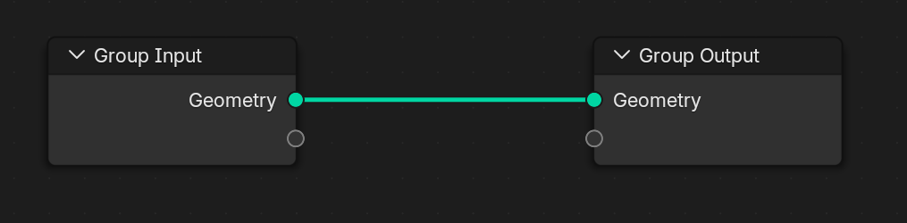

1.3 Components Overview
ใน Geometry Nodes ของ Blender ทุกสิ่งประกอบขึ้นจาก Node Components หรือ "คอมโพเนนต์" ซึ่งเป็นตัวต่อเล็ก ๆ ที่มีหน้าที่เฉพาะ
โดยการเชื่อมต่อ node ต่าง ๆ เข้าด้วยกัน เราสามารถสร้างประกอบกันเป็นรูปทรง หรือ ระบบ animation ที่ซับซ้อนได้
ในหัวข้อนี้ เราจะแยกแยะประเภทของคอมโพเนนต์หลัก ๆ ที่ใช้งานบ่อยใน Geometry Nodes

ทุกครั้งหลังจากสร้าง Geometrynodes แล้วเห็น 2 nodes นี้เป็นค่าเริ่มต้นเสมอ
1.3.1 Input Nodes
ใช้สำหรับนำข้อมูลเข้าสู่ระบบ เช่น:
- Geometry: นำ geometry จากต้นทางเข้ามาใช้งาน หรือ สร้างขึ้นมา
1.3.2 Output Nodes
ใช้สำหรับส่งผลลัพธ์ของ node graph กลับไปที่ modifier:

- Group Output: จุดสิ้นสุดของ node group สำหรับส่งข้อมูลที่ได้ ออกไปสู่โปรแกรมหลัก
- Viewer (Blender 4.x): สำหรับดูผลลัพธ์ชั่วคราวระหว่างทำงาน > ข้อมูลจะแสดงที่ spread sheet หรือ ในหน้าจอ 3D เปิด Viewer Node > Attribute Text


1.3.3 Geometry Nodes
แกนหลักของการจัดการรูปทรง:
- Mesh Primitives: เช่น Cube, Ico Sphere, Cylinder
- Curve / Point / Volume Nodes: สร้างหรือจัดการ curve, จุด, volume
- Transform / Join / Merge Geometry: รวมและปรับแต่งรูปทรง
1.3.4 Attribute & Field Nodes
ใช้จัดการกับข้อมูลในแต่ละจุด เช่น:
- Position, Normal, Index: ดึงข้อมูลจาก geometry
- Attribute Math / Combine / Separate: คำนวณและจัดการข้อมูลใน field
1.3.5 Utility Nodes
ใช้สำหรับ logic และ control flow:
- Switch, Compare, Boolean Math: ควบคุมเงื่อนไขและการทำงาน
- Map Range, Clamp, Noise Texture: สร้างความเปลี่ยนแปลงหรือสุ่มค่า
1.3.6 Instance Nodes
ใช้สำหรับสร้างวัตถุซ้ำ ๆ:
- Instance on Points
- Pick Instance
- Realize Instances
1.3.7 Group Nodes
- รวม node หลายตัวเป็นกลุ่มเดียว เพื่อความเป็นระเบียบและนำกลับมาใช้ซ้ำ
- รองรับ input/output ของตัวเองเหมือนฟังก์ชันในโปรแกรมมิ่ง
สรุป
การเข้าใจภาพรวมของคอมโพเนนต์ใน Geometry Nodes จะช่วยให้สามารถวางระบบ node graph ได้อย่างมีโครงสร้าง
ในบทถัดไป เราจะลงลึกไปที่การใช้งาน Fields และ Attribute ซึ่งเป็นหัวใจสำคัญของการควบคุมข้อมูลในระบบ node graph ของ Blender